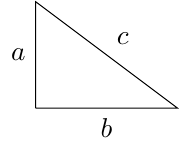
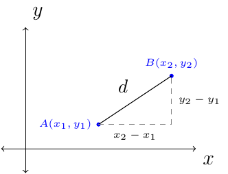
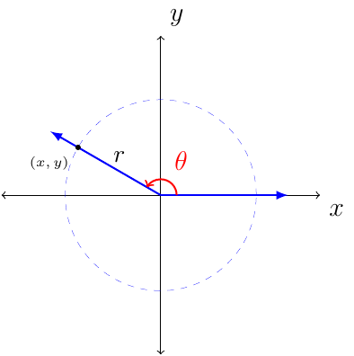

Section 1.3
Theorem 1

If a triangle is a right triangle, then \(a^2+b^2=c^2\).
If the sides of a triangle satisfy \(a^2+b^2=c^2\), then the triangle is a right triangle.

By Pythagorean Thoerem we have the following distance forumla:

From the image notice that \(r=\sqrt{x^2+y^2}\).
The following definition is associated with the above image showing a point in space with a radius and angle, \(\theta\).
Definition 2
Let \((x,y)\) be a point other than the origin on the terminal side of angle \(\theta\) in standard position.
The distance from the point to the origin is \(r=\sqrt{x^2+y^2}\). The six trigonometric functions of \(\theta\) are as follows.
Example 1
The terminal side of an angle \(\theta\) in standard position passes through the point \((4,3)\). Find the values of the six trigonometric functions.
Solution:
In order to find the values of the six trig functions we need to know what \(x\), \(y\), and \(r\) equals. We are given \(x=4\) and \(y=3\). To find \(r\) we find the distance between the point \((4,3)\) and the origin, \((0,0)\).
Therefore, we have \(x=4\), \(y=3\), and \(r=5\). Using the previous definition we have:
The terminal side of an angle \(0^{\circ}\) in standard position would pass through any point along the positive \(x\)-axis. The radius for this situation would then be \(r=x\). Therefore, we have the following conclusion for evaluating the six trig functions when \(\theta=0^{\circ}\).
\(\theta\) |
\(\cos(\theta)\) |
\(\sin (\theta)\) |
\(\tan(\theta)\) |
\(\sec(\theta)\) |
\(\csc(\theta)\) |
\(\cot(\theta)\) |
|---|---|---|---|---|---|---|
\(0^{\circ}\) |
1 |
0 |
0 |
1 |
UND |
UND |
\(90^{\circ}\) |
0 |
1 |
UND |
UND |
1 |
0 |
\(180^{\circ}\) |
-1 |
0 |
0 |
-1 |
UND |
UND |
\(270^{\circ}\) |
0 |
-1 |
UND |
UND |
-1 |
0 |
\(360^{\circ}\) |
1 |
0 |
0 |
1 |
UND |
UND |